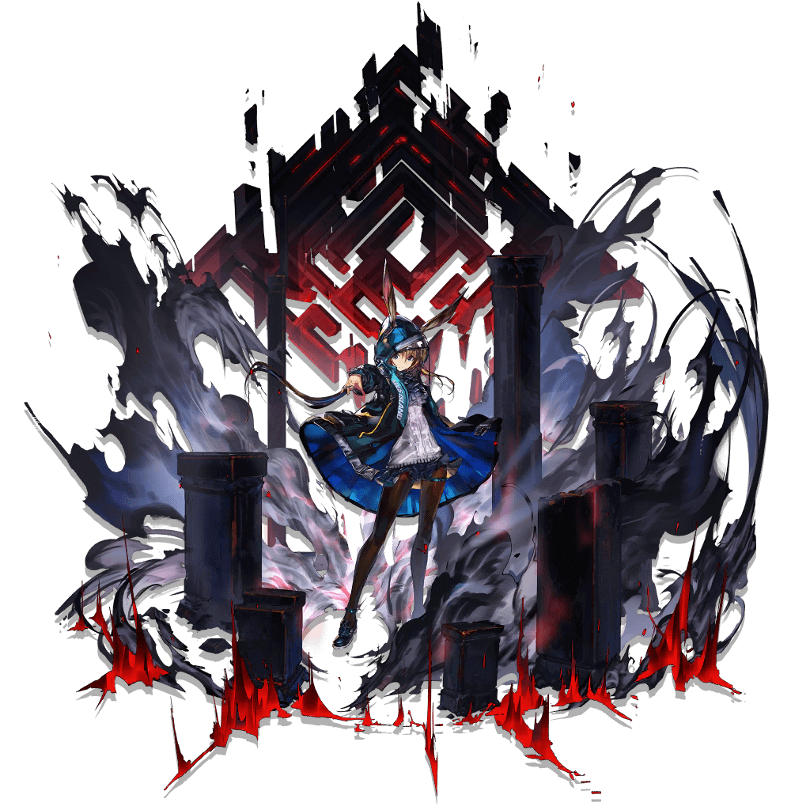
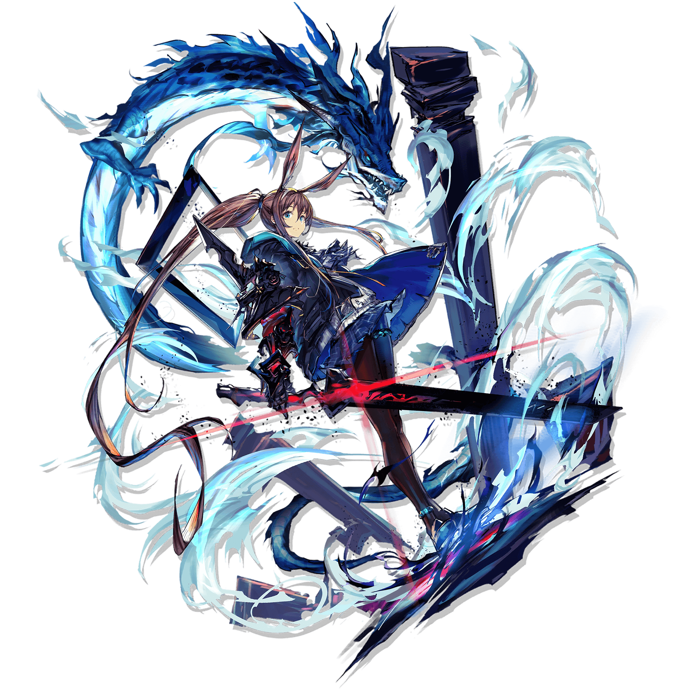

Amiya
"You will understand my choice one day... Forgive me."

The de facto protagonist of the Arknights storyline and the player’s most stalwart assistant. For a free unit who is handed to you at the start of the game, Amiya is a surprisingly good 5★ Caster. In fact, she’s one of the better single-target DPS Casters in Arknights.

